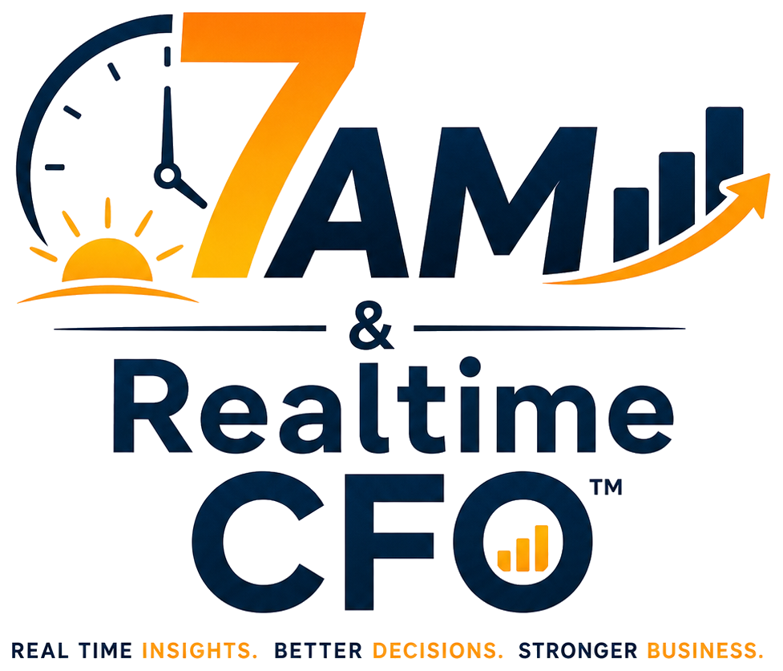

Not a tagline. The reason 7AM & Realtime CFO™ was built — and exactly who it is built for.

I turn scattered-data horror stories — the pain, the sleepless nights — into happy endings; clarity that lasts, morning after morning, so businesses live happily ever after.— Suraj Kumar Lohani, Creator of 7AM & Realtime CFO™
7AM & Realtime CFO™ was not built in a lab. It was built by someone who has sat inside real ledgers, real chaos and real month-ends — and has personally felt what it costs a business when the numbers are technically available but nobody can see what they actually mean.
That is carried with a quiet personal discipline — a daily practice of humility, patience and consistency that shapes how this work gets done, not just what gets delivered. It rarely needs to be said out loud; it simply shows up as a refusal to cut corners with someone else's numbers.
Which is why the product follows one non-negotiable rule: Data First. AI Second. Every number is verified before it is ever summarized, because a wrong number delivered fast is still wrong. The mission is not more automation for its own sake — it is visibility a founder can actually stake a decision on, every single morning.
That mission is carried out as a strategic partner to CEOs, directors, owners and founders — not a vendor delivering a report and moving on, but someone who sits with the business long enough to see what the numbers are actually trying to say.
Where we work, what we build, and who it is built for — all one architecture, not three separate offerings.
One is Financial Diagnostic & Control Architecture. The other goes past the system record to ground-level reality. Together, this is the mechanism behind every number below.
saved and variance corrected through Financial Diagnostic & Control Architecture.
in fraud caught since 2009, using the Last Layer Approach™.
Read Your Business News Before the World's News. Every Morning at 7AM.
Your CFO in Your Pocket. One Page News of Your Business. Anytime. Anywhere.
Scattered Data → Finance OS™ → Visibility and Clarity.
Cash Position. Cash Vs Profit. Variance Flag. Inventory Management. Working Capital. Today's Decisions.
A short diagnostic reveals where your biggest visibility gap is — cash, inventory, costing or controls. Free. Ten minutes. No obligation.
Start the Free Diagnostic →